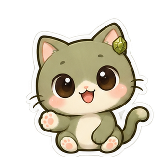
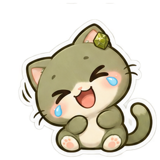
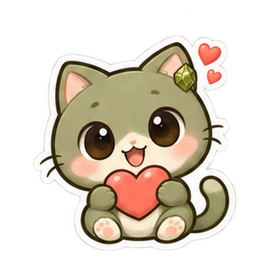
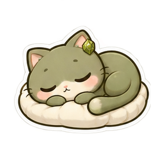
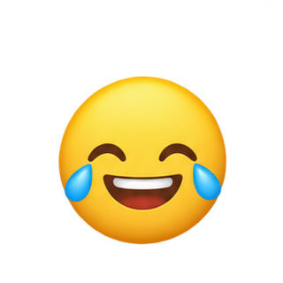
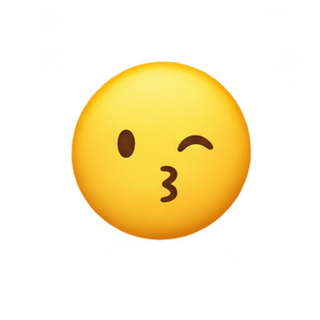

Первые движения и эмоции для твоего чата.
Приглушённый оливковый с зелёным подтоном.




Компактные реакции с мягкими тенями и без обводки.


Пробные циклы из четырёх нарисованных кадров. Отдельные анимации — WebP с прозрачностью и GIF на светлом фоне.